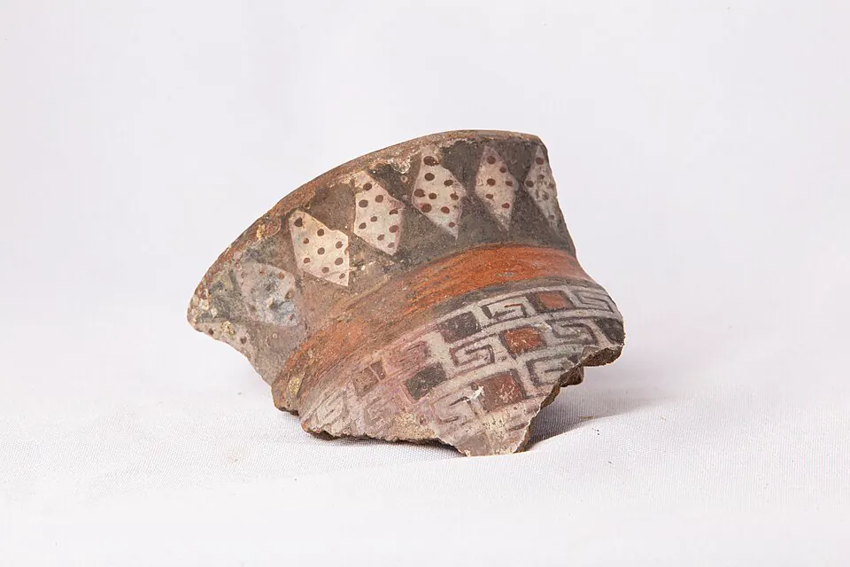

Cultura Diaguita

La cultura Diaguita se desarrolló en los valles transversales del Norte Chico —Copiapó, Huasco, Elqui, Limarí y Choapa— aproximadamente entre el año 1000 d.C. y la llegada de los españoles. Fue precedida por otras culturas agroalfareras, como El Molle y Las Ánimas.
Los diaguitas aprovecharon los ríos para regar cultivos de maíz, porotos, zapallos y quínoa, criaron llamas y explotaron los recursos de la costa. Según los cronistas españoles, cada valle tenía una organización dual, con dos autoridades: una para la parte alta y otra para la baja. Su cerámica es una de las más reconocidas de América del Sur, por sus diseños geométricos en blanco, rojo y negro, y por piezas como el jarro pato.
A fines del siglo XV fueron incorporados al Imperio inca (Expansión inca en Chile), lo que dio origen a un estilo mixto llamado diaguita-inca. Con la conquista española sufrieron guerras, trabajo forzado y una fuerte caída de su población. El nombre "diaguita" fue dado por los españoles, y no se sabe con certeza cómo se llamaban a sí mismos. El Pueblo Diaguita fue reconocido legalmente en Chile en 2006.
Versión para niños
En los valles del Norte Chico, como el Valle de Elqui, vivieron los diaguitas. Sembraban maíz, porotos y zapallos, y regaban sus campos con el agua de los ríos. También criaban llamas y pescaban en la costa. Eran grandes artistas: hacían platos y jarros de greda pintados con figuras de color blanco, rojo y negro. Cada valle tenía dos jefes, uno para la parte alta y otro para la parte baja. Hoy el pueblo diaguita sigue presente y está reconocido por ley.
Para maestros
Nivel sugerido: 2° básico
Objetivo: Reconocer las principales características de la cultura diaguita, en especial su agricultura de valle y su cerámica. La fecha lleva "c." porque es una aproximación arqueológica al inicio de esta cultura.
Preguntas para la clase:
- ¿Por qué los diaguitas vivían cerca de los ríos?
- ¿Qué colores y formas usaban en su cerámica?
- ¿Qué nos puede contar un jarro sobre el pueblo que lo hizo?
Actividad (20–30 min): Los estudiantes observan imágenes de cerámica diaguita y diseñan, en una hoja recortada con forma de plato, su propio motivo geométrico usando solo blanco, rojo y negro. Luego explican qué representa su diseño.
Fuentes sugeridas: Museo Chileno de Arte Precolombino; Memoria Chilena; Museo Histórico Nacional.
Objetivos de Aprendizaje (Currículum Nacional)
- 2° básico · HI02 OA 01 Describir los modos de vida de algunos pueblos originarios de Chile en el periodo precolombino, incluyendo ubicación geográfica, medio natural en que habitaban
- 2° básico · HI02 OA 10 Ubicar en mapas las zonas habitadas por algunos pueblos originarios de Chile, distinguiendo zonas norte, centro y sur
- 1° medio · HI1M OA 24 Evaluar … las relaciones de conflicto y convivencia con los pueblos indígenas (aymara, colla, rapa nui, mapuche, quechua, atacameño, kawéskar, yagán, diaguita)
Revisión humana pendiente. Cómo se revisa · Reportar un error
Cómo citar: Historia de Chile. (2026). Cultura Diaguita. En Historia de Chile: atlas y línea de tiempo. https://moises-salgado.github.io/historia-de-chile/momento/cultura-diaguita.html